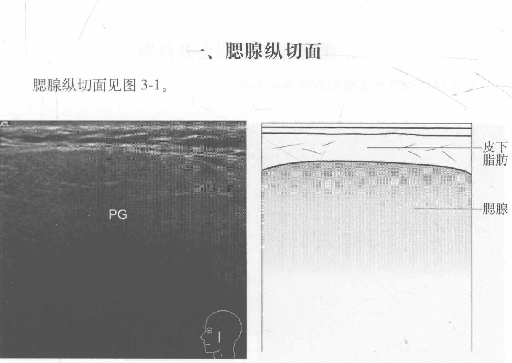
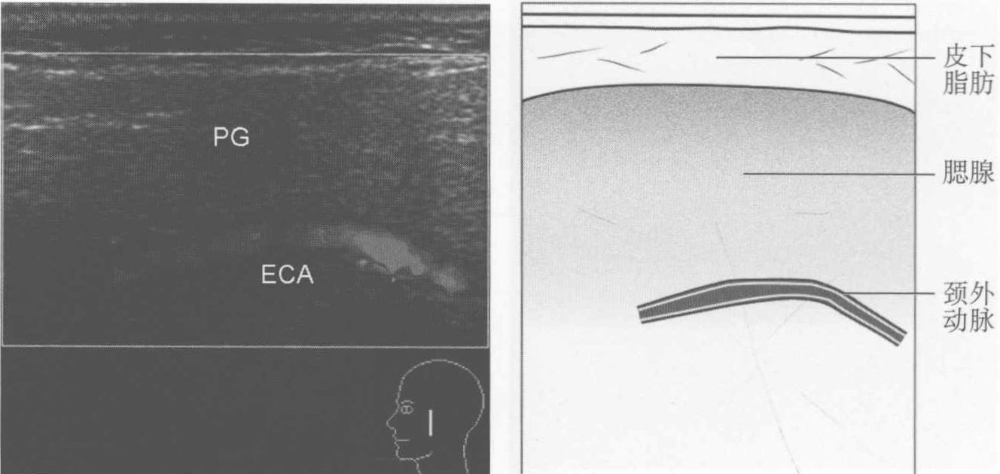
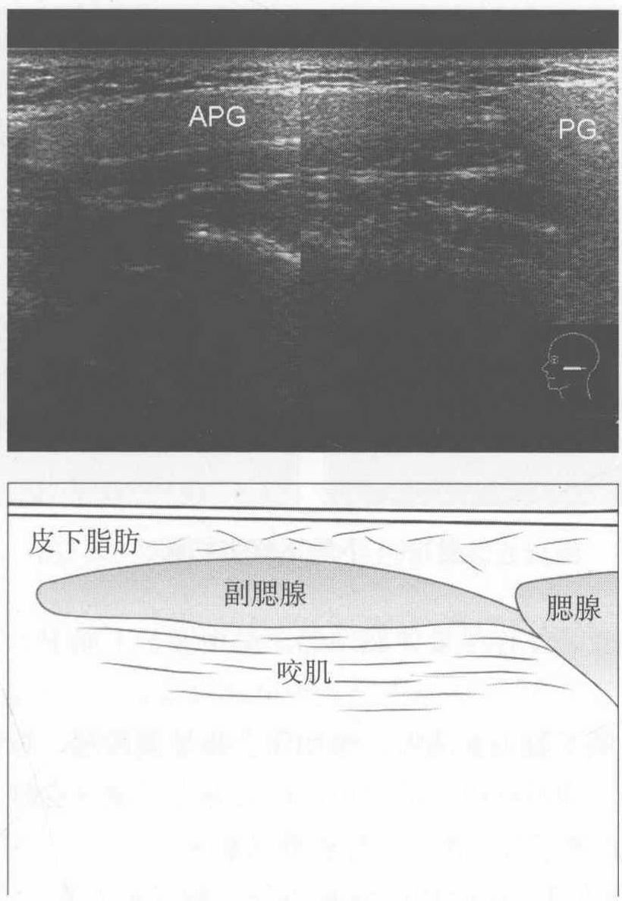
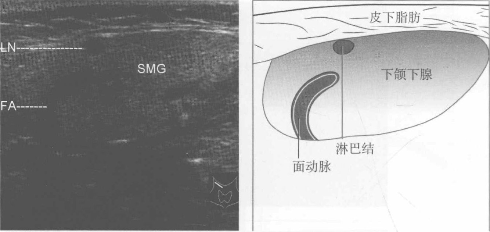
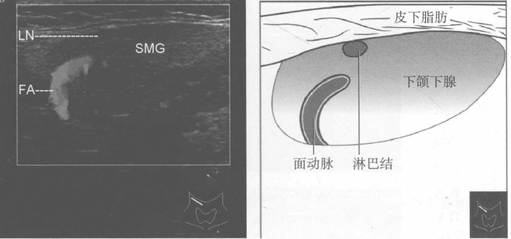

第3章 涎腺
原书页 34–39 · 6 个页面区块 · 6 张配图。正文、图注与图片保持原书顺序。
· APG auxiliary parotid gland 副腮腺
· ECA external carotid artery 颈外动脉
· FA facial artery 面动脉
· LN lymph nodule 淋巴结
· PG parotid gland 腮腺
· SMG submaxillary gland 颌下腺

图3-1 腮腺纵切面（二维声像图）
【测量方法及正常值】在此切面可测量腮腺长径，正常值为5cm，腮腺后缘常显示不清，难以测量其厚径。
【扫查方法】 患者仰卧位，对腮腺区（颜面后侧、颧弓下方、外耳道的前下方、乳突之前、嚼肌表面，下颌支的后方至下颌角的后方）做纵切扫查，应同时检查颈部淋巴结的情况。
【断面结构】 腮腺前缘清晰，实质回声均匀。高于周围软组织的回声，实质多有衰减，腺体后缘和两侧边缘显示不清。纵切面上形态似倒置的金字塔形，通常不能分出腮腺的深浅叶，正常情况下腮腺导管难以显示。
【临床价值】此切面可显示腮腺实质回声是否均匀，以除外腺体的弥漫性病变，如干燥综合征或其他急、慢性炎症引起的颌下腺实质改变。在此切面基础上纵切扫查，可除外腮腺占位性病变。
【附注】 腮腺淋巴结浅群位于腮腺表面，深群位于腮腺实质内，检查时应注意勿将淋巴结误认为腮腺的占位性病变。
二、 腮腺纵切面彩色多普勒
腮腺纵切面彩色多普勒血流图见图3-2。

图3-2 腮腺纵切面彩色多普勒血流图
【扫查方法】 检查方法同上，检查时应注意尽量不加压，以免影响血流的显示。
【断面结构】 正常腮腺内无血流信号或仅见点状分布的少许血流信号，有时可显示穿行于腺体深部的颈外动脉。
【临床价值】各种炎症时腮腺内血流信号可增多，并可见条状血流信号。
三、 副腮腺横切面
副腮腺横切面见图3-3。

图3-3 副腮腺横切面（二维声像图）
【断面结构】 正常副腮腺边界清晰，横切面上呈条状，腺体内部回声特征与腮腺一致，与腮腺由一较细的部分相连。副腮腺深侧为咬肌。
【扫查方法】副腮腺一般位于腮腺前缘与咬肌前缘之间，其检查方法同腮腺检查方法一致。
【临床价值】 超声可显示副腮腺与腮腺的联系，不致将其误认为占位性病变。
四、 下颌下腺纵切面
下颌下腺纵切面见图3-4。

图3-4 下颌下腺纵切面
【扫查方法】 患者卧位，尽量伸展颈部，探头置于下颌下，方向与下颌骨走向一致。
【断面结构】下颌下腺边界清晰，纵切面上略呈椭圆形，腺体内部回声特征与腮腺一致，高于周围软组织的回声，但后方无衰减，有时可显示走行于腺体中的面动脉。正常情况下颌下腺导管难以显示。
【测量方法及正常值】在此切面测量下颌下腺长径及厚径，长径正常值为3cm，男性下颌下腺长径略大于女性，厚径正常值为1.5cm，男女间无明显差异。
【临床价值】此切面可显示下颌下腺实质回声是否均匀，以除外各种炎症等疾病引起的腺体的弥漫性病变。在此切面基础上纵切扫查，可除外下颌下腺占位性病变。
五、 下颌下腺纵切面彩色多普勒
下颌下腺纵切面彩色多普勒血流图见图3-5。

图3-5 下颌下腺纵切面彩色多普勒血流图
【扫查方法】 患者卧位，尽量伸展颈部，探头置于颌下，方向与下颌骨走向一致。检查中尽量不加压以免影响腺体内血流显示。
【断面结构】正常下颌下腺实质内无血流信号或仅见散在分布的点状血流信号，面动脉穿行于腺体内。
【临床价值】下颌下腺炎症时血流可增多。
（徐钟慧）